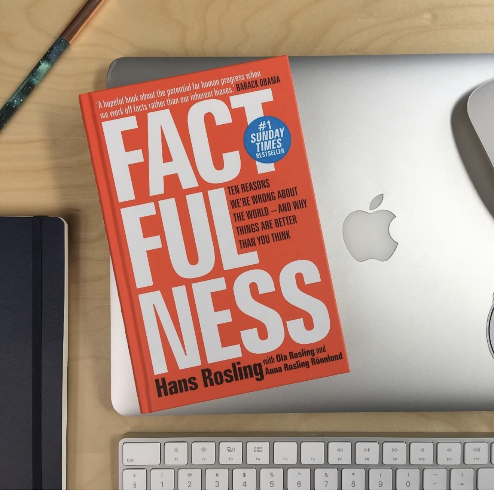

Factfulness : Ten Reasons We're Wrong about the World and Why Things Are Better than You Think
Author: Rosling, Hans / Rosling, Ola / Ronnlund, Anna Rosling
INSTANT NEW YORK TIMES BESTSELLER
One of the most important books I’ve ever read―an indispensable guide to thinking clearly about the world.
-Bill Gates
Hans Rosling tells the story of ‘the secret silent miracle of human progress’ as only he can. But Factfulness does much more than that. It also explains why progress is so often secret and silent and teaches readers how to see it clearly.
-Melinda Gates
Factfulness by Hans Rosling, an outstanding international public health expert, is a hopeful book about the potential for human progress when we work off facts rather than our inherent biases.
-Former U.S. President Barack Obama
Factfulness: The stress-reducing habit of only carrying opinions for which you have strong supporting facts.
When asked simple questions about global trends ―
- What percentage of the world’s population live in poverty?
- Why the world’s population is increasing?
- How many girls finish school?
We systematically get the answers wrong. So wrong that a chimpanzee choosing answers at random will consistently outguess teachers, journalists, Nobel laureates, and investment bankers.
In Factfulness, Professor of International Health and global TED phenomenon Hans Rosling, together with his two long-time collaborators, Anna and Ola, offers a radical new explanation of why this happens. They reveal the ten instincts that distort our perspective ―from our tendency to divide the world into two camps (usually some version of us and them) to the way we consume media (where fear rules) to how we perceive progress (believing that most things are getting worse).
Our problem is that we don’t know what we don’t know, and even our guesses are informed by unconscious and predictable biases.
It turns out that the world, for all its imperfections, is in a much better state than we might think. That doesn’t mean there aren’t real concerns. But when we worry about everything all the time instead of embracing a worldview based on facts, we can lose our ability to focus on the things that threaten us most.
Inspiring and revelatory, filled with lively anecdotes and moving stories, Factfulness is an urgent and essential book that will change the way you see the world and empower you to respond to the crises and opportunities of the future.
About the Author
Hans Rosling was a medical doctor, professor of international health and renowned public educator. He was an adviser to the World Health Organization and UNICEF, and co-founded Médecins sans Frontières in Sweden and the Gapminder Foundation. His TED talks have been viewed more than 35 million times, and he was listed as one of Time Magazine’s 100 most influential people in the world. Hans died in 2017, having devoted the last years of his life to writing Factfulness.
Ola Rosling and Anna Rosling Rönnlund, Hans's son and daughter-in-law, were co-founders of the Gapminder Foundation, and Ola its director from 2005 to 2007 and from 2010 to the present day. After Google acquired the bubble-chart tool called Trendalyzer, invented and designed by Anna and Ola, Ola became head of Google's Public Data Team and Anna the team’s senior user experience (UX) designer. They have both received international awards for their work.
Product Details
- Hardcover:352 pages
- Publisher:Flatiron Books (April 3, 2018)
- Language:English
- ISBN-10:1250107814
- Shipping Weight:1.2 pounds
- Amazon Best Sellers Rank:
| Rank |
Section |
| #845
| in Books |
| #1
| in Probability & Statistics |
| #3
| in Statistics |
| #9
| in Medical Cognitive Psychology |
Get Your Copy Here
Kindle
Amazon
Google Play